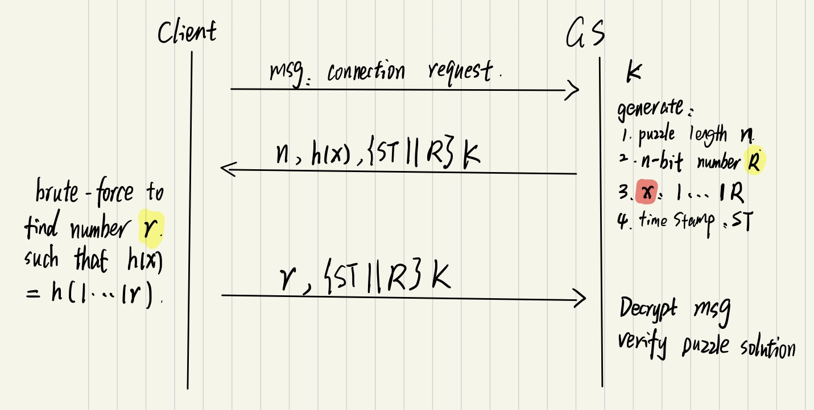
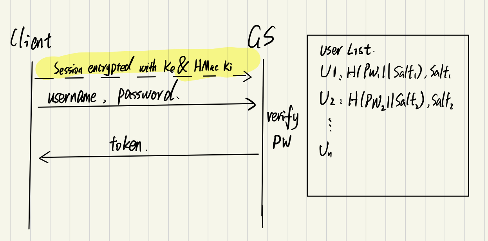

Up until now we have been working with a threat model that includes a trustworthy group server, and untrustworthy file servers and clients. Now, we are going to showcase threats and counters to attacks that can come about when the group server is now untustworthy. Some threats that come about include password leaks, unauthenticated group server, and a DDos threat. To counter these, we need a way to store passwords securely and protect against a bruteforce attack, authenticate the group server, and make client requests expensive. We will also be working with the same threat models as both Phase 3 and Phase 4 but adding onto them to fine these vulnerablities within our system that we already implemented safeguards against the threats in phase 3 and 4. Our safeguards for our new threats will help build upon old safeguards and not ruin them.
Group Server: The group server is largely untrusted, meaning even after properly authenticating it, there is still possibilities for the server itself to leak user information such as password. Still any attacker could be able to imitate the group server. The group server is assumed to not share secrets with the file server.
File Server: The same as Phase 4, File servers are largely untrusted and can leak files as well as steal user tokens
Clients: Much like the previous phases, clients are highly untrustworthy. They will try to imitate both group and file servers as well as try to steal user tokens as well as forge/modify their own tokens. Clients will also attempt to send many requests to the servers in an attempt to slow or disrupt the server and other clients.
Other Principals: Active and Passive adversaries are both watching communication between the client and server. Attackers are also watching for data leaks (more specifically passwords)
Attack 1: Adversary Posing as a Group Server- A client can try to connect to GS1 but then be redirected by an adversary to their own server, GS1'. Now, the client believes they are in contact with a trusted group server, GS1, but are in fact in contact with GS1' a malicious copycat. To go through with this attack the attacker must first somehow redirect the client to their own malicious server. The client will connect to this group server then the attacker has access to any messages sent between GS1' and the client. This can include passwords and other sensitive information. This Attack does not really have alot of steps to it because it is a very simple threat that can be taken advantage of easily, but it has many repurcussions to it.
Attack 2: Dos Attack Anytime a user connects to a server many different computationally expensive processes are happening. The group server is decrypting, encrypting, creating sequence numbers and HMacs just for the first message sent back to the client. Because of this, a Dos attack is a real problem if an attacker repeatedly tries to connect to the group server. The server could slow down to a halt or even crash which will disrupt all usage for the group server with other clients as well. If they are in the middle of a conversation with the server, this can cause many problems as well.
Attack 3: Password Leakage: Since our Group Server is untrustworthy we can assume that at some point, the stored passwords for all the users will be leaked. Since these passwords are stored in plaintext, an attacker will have the password for the user(s) and be able to do any processes the user can do on the system. Even if the passwords are stored as hashes instead, there is still bruteforce/table/rainbow table attacks that can happen which still will put the users confidentiality at risk.
Problem: If there is no protection against a client connected to server they did not originally want to connect to. they can be redirected to another server. This server can have malicious plans by taking the user private information or even sending malicious data to the client that can compromise their own system
Solution: To protect against this we are implementing a way to authenticate the group server we are connecting to. More specifically, we are encrypting a random 16 byte nonce (using SecureRandom) along with the first message(Session key) sent to the group server with group server's public key. The server must reply back in the next message with the encrypted nonce with session key. The client can compare the nonce sent with the one recieved and if they are the same, they can proceed with the connection. Otherwise, the connections is terminated.
Why: The reason that this works is because only the group server with the respective private key that coincides with the public key can decrypt the nonce sent by the client. If the group server does not have the private key, then they will not be able to know the nonce and cannot send back the correct one. We must assume that the private key of the group server is secure. The client will also recieve the 2048 byte public key out of band via a server administrator.
Problem: If an attacker can send infinite requests quickly and not expensively, the server can become overloaded and may crash or significantly slow. This can cause other clients to not be able to connect or clients already connected to disconnect. This takes away for the usability and availability of the server to the client.
Solution:
Avoiding resource disparity is a good measure to mitigate the impact of Dos attack. Clients need to pay for their requests by solving a hard puzzle first before connecting to group server.So here we are going to do computational puzzle as countermeasure. And for this computational puzzle, it should be easy for group server to generate and verify but difficult for user to solve at the same time.
Why: The reason this will mitigate the attack is because now, anytime a client wants to connect to a server it will be expensive to do so. They will not be able to send a number of requests that overload the server because before the group server will run those actions, they must wait for the answer from the client. Since it will take much longer to solve the puzzle compared to solving no puzzle, the resource disparity will diminish. We must assume that clients have similiar computational abilities, puzzles cannot be parallelized between clients, and the puzzle can be generated efficiently by the group server
Problem: If passwords are leaked and they are only in plaintext, an attacker now has those passwords and can sign in as any of those users. Now, a small protection could be store the hash of the password. This helps but is subject to brute force/table lookups/ and rainbow table attacks to which an attacker can still identify the plaintext password. If the attacker gets access to a clients password, they can sign into their account and ruin the confidentialiy of the client
Solution: There are several things that need to come into play when storing a password securely and can protect against the above threats. A salt to hash with the password and a computationally expensive hash function. For our solution, when a user is created, they will have a temporary password created as well as a 16 byte salt generated by SecureRandom. The salt will be appended to the password and then we will hash the full text using PBKDF2. The reason we are using PBKDF2 is because it can be used to slow the process of hashing and make it more difficult for a user to bruteforce the hashes. We can use use a factor x as an input to the PBKDF2 function that will slow down the hash function by that factor x. X will need to be calculated and tested based on making it difficult for an attacker but not too slow where it slows the user experience by much. We will also set the length of the derived key to 16 bytes. A user will also be able to change their password if they want to ensure the password is not forgotten. Everytime a user changes their password a new salt will be generated and the new hash will be stored along with the new salt.
Why: The reason that this heps protect against password leakage is because it first does not store the passwords as plaintext but as a hash. The salt will help randomize each hash and protect against a lookup/rainbow table attack. Since brute force dictionary attacks are more or less (in the scope of the project) impossible to completely be secure against, we can make it very expensive for the attacker to do. storing the passwords as hashes using PBKDF2 does just that an slows down the brute force attack significantly.
We wanted to look at our system and take some of the attacks we learned about during class and see if they can be used against our system. We looked at how the file server needed to be authenticated since it was not fully secure but then wondered what if the group server was not fully secure. Since our threat model includes that the GS is not secure then we knew we would have to authenticate it much like we authenticated the file server. Since the GS being unsecure brings out alot of vulnerabilities in the system we also looked at how if the file servers can leak sensitive information, so can the group server. More specifically, the GS can leak passwords to which we said we could just hash the passwords but those are still vulnerable to lookup attacks and brute force attacks. So, we said we can add a salt to the password as well. This takes care of lookup but not brute force dictionary attacks. After doing research online it seemed a good way to lower the efficiency of a dictionary attack is to make it expensive to do so (much like our mitigation of a Dos attack). PBKDF2 is a useful hash function that allows the developer to choose a factor of how slow the hash function is. This, paired with the salt as well, allows our system to be very effective at mitigating these attacks. Finally, since it was fresh in our mind from class and is a very "popular" form of attack, the Dos attack was next. One thing about our system is that it goes through alot of functions and computations when it first is connected to. We knew we needed a way to slow the rate of connections from a user. The one way we learned about in class is to send a computationally expensive puzzle to the user, to which they can only connect if they solve the puzzle.
Now, 2 of these attacks were dependant on our threat model of the group server being unsecure. Its ahrd to say for us if this is realistic because saying anything is completely secure is a stretch but like we talked about in kerberos, it assumes that the main server is secure.
After we developed this threat model, it was easy to go through each of our processes from previous phases and see where the new threats emerge. From there it was up to us to look back in class and do our own research on how to protect against these attacks. In fact, in phase 3 we originally wanted to store the passwords as hashes but were told this does not completely solve the problem. This is when we learned about salts and PBKDF2 but because of time constraints and the threat model not needing us to protect against this threat, we did not implement it.
These new countermeasures flowed well with our old countermeasure for threats 1-7. Some were improved upon such as now instead of every user having a plaintext password stored, we are storing the more secure hashof the password. We also were able to use the authentication process we used for file servers, for the group server. The countermeasure against the Dos attack does not hurt any of our other protections, it just adds an extra step to the connection. One thing that can be seen as a negative is we have introduced some slow processes like the user completing the puzzle and the Group Server hashing the password. However, there is always tradeoffs with security and if the system is more secure than before, it was a worthwhile tradeoff.